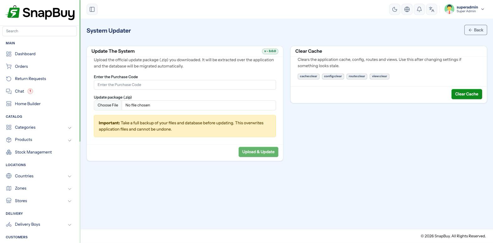
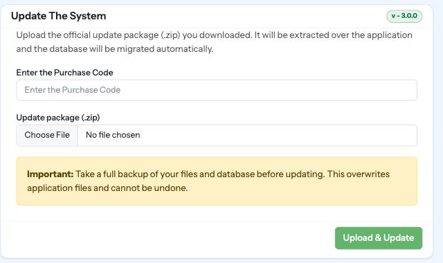

System Updater
Menu path: Settings → System Updater
Applies a SnapBuy update from a .zip package you upload, without touching FTP or SSH.

Back up before every update
An update overwrites application files and runs database migrations. There is no undo button.
Before you start:
- Back up the database — see Backup Database
- Back up the project files — see Backup Project
Do this every time, including for updates you expect to be small.
What happens
- You download the official update package from your purchase source (CodeCanyon).
- You upload the
.ziphere, along with your purchase code. - The purchase code is validated against the domain the panel is actually served from.
- The archive is extracted to a temporary folder.
- Files are copied over the application root.
- Database migrations run.
- Caches are cleared.
No remote update server is contacted
SnapBuy never downloads updates by itself. You control exactly which package is applied and when.
Requirements
| Requirement | Notes |
|---|---|
| Valid purchase code | Validated against the panel's live domain |
PHP zip extension | The update is refused without it |
| Upload limits | The ceiling is 1 GB; real packages are far smaller |
| Writable application root | Files are copied over the live installation |
Purchase code is checked against the real domain
Validation uses the address the panel is being served from, not the APP_URL value in .env. Editing APP_URL will not make a code for a different domain work.
Raise PHP limits before uploading
A large package can exceed the defaults and fail part-way — which is the worst outcome, because some files may already be replaced. Confirm upload_max_filesize, post_max_size and max_execution_time are generous first. See PHP INI Settings.
Applying an update
- Take both backups.
- Put the customer-facing surfaces into Maintenance Mode.
- Go to Settings → System Updater.
- Upload the
.zipand enter your purchase code. - Wait — do not refresh or navigate away.
- Visit
/clearonce it completes. - Test before turning maintenance off.

Do not interrupt an update in progress
Refreshing mid-copy can leave a half-updated file set — some files new, some old — which usually produces fatal errors. If it appears to hang, wait it out, then check storage/logs/laravel.log before doing anything else.
After updating
Check these, in order:
- The panel loads and you can sign in
-
/clearhas been visited - Product images still display — if not, visit
/linkstorage - Place a test order end to end
- A test payment still completes
- Push notifications still arrive
- The cron heartbeat is still green under Cron Jobs
- Turn maintenance off
Update a staging copy first if you have customised anything
The updater copies package files over yours. Any file you edited directly — a template, a controller, a style sheet — is overwritten without warning. If you have customisations, apply the update to a copy first and reapply your changes there.
Updating manually instead
If the uploader fails — usually because of PHP limits on shared hosting — apply it over FTP or SSH:
# with backups already taken
unzip update.zip -d /path/to/snapbuy
cd /path/to/snapbuy
php artisan migrate --force
php artisan config:clear
php artisan cache:clear
php artisan view:clear
php artisan route:clearIf you cannot run Artisan, the panel exposes /migration and /clear as browser equivalents.
Those URLs are unauthenticated
/migration, /clear, /migrate and /logs are not behind a login. Restrict them by IP in production — see Server Setup.
Demo mode
Updates are disabled when the installation is running in demo mode, with "This action is disabled in demo mode."
Troubleshooting
| Symptom | Cause | Fix |
|---|---|---|
| "Invalid purchase code" | Code belongs to another domain, or no outbound HTTPS | Check the domain; test curl -I https://validator.wrteam.in |
| "Please upload a valid zip file" | Wrong file type or a corrupt download | Re-download the package |
| "PHP zip extension is required" | zip not enabled | Enable it and restart the web server |
| Upload fails on a large file | PHP limits too low | Raise them — see PHP INI Settings |
| Update completes, panel errors | Stale caches | Visit /clear |
| Images gone after updating | Symlink lost | Visit /linkstorage |
| Customisations disappeared | Overwritten by the package | Restore from your file backup |
| Update hung part-way | Execution timeout | Restore from backup and retry with higher limits |